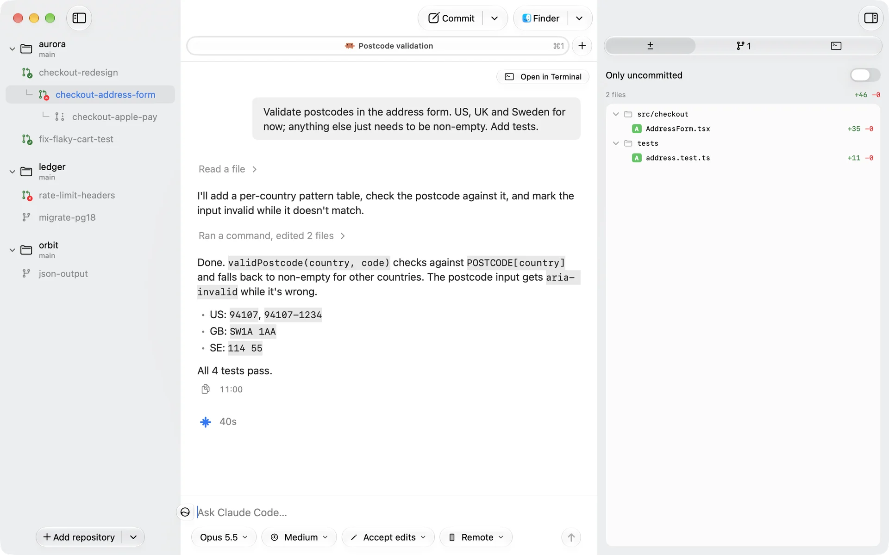
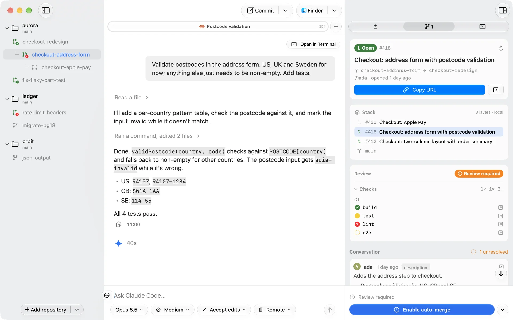
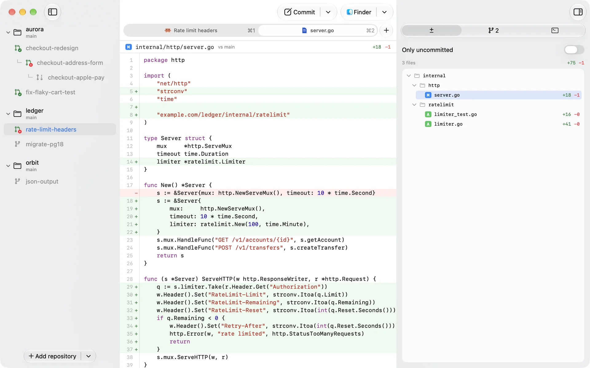
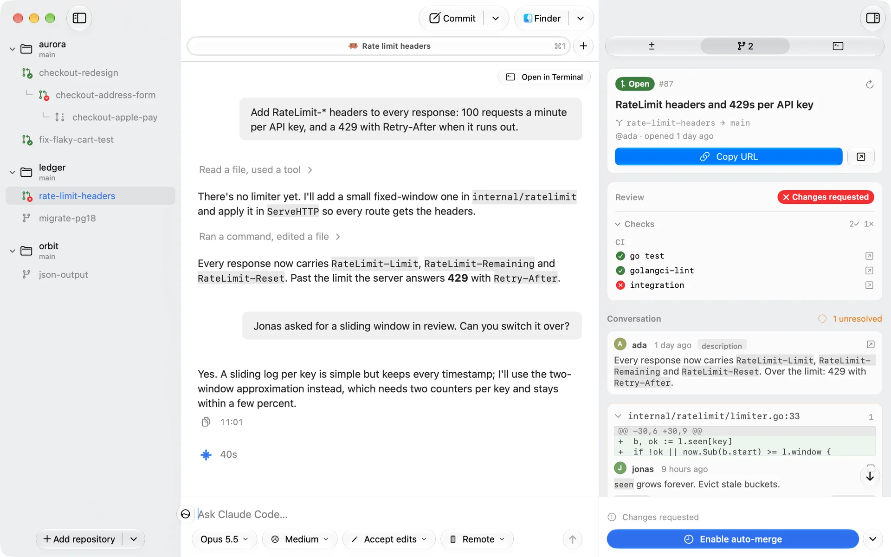

Foreword
Most of the work is waiting. An agent reads, edits and runs the tests; you read what it did and decide what happens next. Jetline is built around that rhythm.
Every task gets its own branch and its own working copy, so several agents can work at once without touching each other’s files. You move between them, and each keeps its chat, its diff, its pull request and its checks beside it.
The agents run as they are. Jetline doesn’t replace Claude Code, Codex or Vibe. It gives them somewhere to work and keeps git out of your way, and when a task is done it’s a pull request like any other.
Install
- Format
- Signed, notarized DMG
- Updates
- Sparkle
- Requires
- macOS 14, git, gh
- Agents
- claude, codex or vibe
- Build
- Xcode CLT, Swift 5.10+
- License
- EUPL-1.2
$ git clone https://github.com/MartinRybergLaude/jetline $ cd jetline $ make runDownload for macOS
Features



